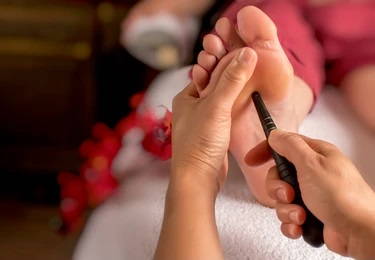

Acupressure is an alternative medicine technique often used in conjunction with acupuncture or reflexology. It is based on the concept of life energy which flows through "meridians" in the body. In treatment, physical pressure is applied to acupuncture points or ashi trigger points with the aim of clearing blockages in these meridians. Pressure may be applied by hand, by elbow, or with various devices
Although some medical studies have suggested that acupressure may be effective at helping manage nausea and vomiting, insomnia, low back pain, migraines, constipation, among other things, such studies have been found to have a high likelihood of bias

A 2011 systematic review of 43 studies of acupressure's effectiveness at treating symptoms found that the nature of these 43 studies "indicated a significant likelihood of bias."[2] Thirty-five of the 43 studies had concluded that acupressure was effective at treating certain symptoms. The authors of this systematic review concluded that this "review of clinical trials from the past decade did not provide rigorous support for the efficacy of acupressure for symptom management.
Another Cochrane Collaboration review found that massage provided some long-term benefit for low back pain, and stated: "It seems that acupressure or pressure point massage techniques provide more relief than classic (Swedish) massage, although more research is needed to confirm this."Trials using placebo have not demonstrated any statistically significant effect but concluded that acupressure is safe to use along with conventional treatment.
There are several different instruments for applying nonspecific pressure by rubbing, rolling, or applying pressure on the reflex zones of the body. The acuball is a small ball made of rubber with protuberances that is heatable. It is used to apply pressure and relieve muscle and joint pain. The energy roller is a small cylinder with protuberances. It is held between the hands and rolled back and forth to apply acupressure. The foot roller (also "krupa chakra") is a round, cylindrical roller with protuberances.
It is placed on the floor and the foot is rolled back and forth over it. The power mat (also pyramid mat) is a mat with small pyramid-shaped bumps that you walk on. The spine roller is a bumpy roller containing magnets that is rolled up and down the spine. The Teishein is one of the original nine classical acupuncture needles described in the original texts of acupuncture. Even though it is described as an acupuncture needle it did not pierce the skin. It is used to apply rapid percussion pressure to the points being treated.
Naturopathy, or naturopathic medicine, is a form of alternative medicine. A wide array of pseudoscientific practices branded as "natural", "non-invasive", or promoting "self-healing" are employed by its practitioners, who are known as naturopaths. Difficult to generalize, these treatments range from outright quackery, like homeopathy, to widely accepted practices like psychotherapy. The ideology and methods of naturopathy are based on vitalism and folk medicine rather than evidence-based medicine, although practitioners may use techniques supported by evidence.
Naturopaths are known for their frequent campaigning for legal recognition in the United States. It is illegal in two U.S. states and tightly regulated in many others. Some states have lax regulations, however, and may allow naturopaths to perform minor surgery or even prescribe drugs. While some schools exist for naturopaths, and some jurisdictions allow such practitioners to call themselves doctors, the lack of accreditation and scientific medical training means they lack the competency of true medical doctors.

Naturopaths are often opposed to mainstream medicine and take an antivaccinationist stance. The particular modalities used by a naturopath vary with training and scope of practice. These may include herbalism, homeopathy, acupuncture, nature cures, physical medicine, applied kinesiology, colonic enemas, chelation therapy, color therapy, cranial osteopathy, hair analysis, iridology, live blood analysis, ozone therapy,psychotherapy, public health measures and hygiene, reflexology, rolfing, massage therapy, and traditional Chinese medicine. Nature cures include a range of therapies based on exposure to natural elements such as sunshine, fresh air, or heat or cold, as well as nutrition advice such as following a vegetarian and whole food diet, fasting, or abstention from alcohol and sugar.

Traditional naturopaths are represented in the United States by the American Naturopathic Association (ANA), representing about 1,800 practitioners[119] and the American Naturopathic Medical Association (ANMA).The level of naturopathic training varies among traditional naturopaths in the United States. Traditional naturopaths may complete non-degree certificate programs or undergraduate degree programs and generally refer to themselves as naturopathic consultants.
Shirodhara comes from the two Sanskrit words “shiro” (head) and “dhara” (flow). It’s an Ayurvedic healing technique that involves having someone pour liquid — usually oil, milk, buttermilk, or water — onto your forehead. It’s often combined with a body, scalp, or head massage. Ayurveda is a holistic health approach that originated in India thousands of years ago. It focuses on rebalancing the life forces, called doshas, within your body.

Shirodhara is said to have relaxing, soothing, and calming effects on the body and mind.
Research also suggests that shirodhara may help:
• improve sleep quality
• manage insomnia
• lessen anxietyTrusted Source (when combined with yoga)
• reduce stressTrusted Source
Keep in mind that most studies looking at the benefits of shirodhara have been pretty small, using only a handful of participants. Still, none of them suggest that the treatment has any negative effects.
There’s no right or wrong answer when it comes to choosing a liquid, and preferences vary across practitioners. Others might use different liquids for different effects.
Sesame oil is widely used because it’s a relatively neutral oil and mixes well with essential oils, which are sometimes used to enhance the experience.
Other oils that might be used include:
• sesame oil
• coconut oil
• ksheerabala oil
• mahanarayan oil
• clarified butter (ghee)
Some practitioners may opt for:
• water
• coconut water
• animal milk
• buttermilk
In addition to essential oils, practitioners might also add a variety of Ayurvedic herbs.
Be sure to tell your practitioner about any allergies or skin sensitivities you have ahead of the appointment.

Shirodhara is pretty safe. The main risks involve the liquid being too hot or getting into your eyes, which shouldn’t be an issue with an experienced practitioner.
If you have extra-sensitive skin, you might also want to ask about doing a patch test with the liquid first, just to make sure it won’t cause any irritation. Always dilute essential oils in a carrier oil.
If you have any cuts or open wounds, especially on your face, it’s best to hold off on trying shirodhara until they heal.
Hydrotherapy, formerly called hydropathy and also called water cure,[1] is a branch of alternative medicine (particularly naturopathy), occupational therapy, and physiotherapy, that involves the use of water for pain relief and treatment. The term encompasses a broad range of approaches and therapeutic methods that take advantage of the physical properties of water, such as temperature and pressure, to stimulate blood circulation, and treat the symptoms of certain diseases.
Water therapy may be restricted to use as aquatic therapy, a form of physical therapy, and as a cleansing agent. However, it is also used as a medium for delivery of heat and cold to the body, which has long been the basis for its application. Hydrotherapy involves a range of methods and techniques, many of which use water as a medium to facilitate thermoregulatory reactions for therapeutic benefit.Hydrotherapy is used as an adjunct to therapy, including in nursing, where its use is now long established.
The appliances and arrangements by means of which heat and cold are brought to bear are:
• Packings, general and local (i.e. Liniment);
• Hot air and steam baths;
• General baths;
• Treadmills;
• Sitz (sitting), spinal, head, and foot baths;
• Bandages or compresses, wet and dry; also;
• Fomentations and poultices, sinapisms, stupes, rubbings, and water potations.
Hydrotherapy which involves submerging all or part of the body in water can involve several types of equipment:
• Full body immersion tanks (a "Hubbard tank" is a large size)
• Arm, hip, and leg whirlpool
Whirling water movement, provided by mechanical pumps, has been used in water tanks since at least the 1940s. Similar technologies have been marketed for recreational use under the terms "hot tub" or "spa".
A mud bath is a bath of mud, commonly found in areas where hot spring water can combine with volcanic ash. Mud baths have a long history that dates back thousands of years. They can be found in high-end spas in many countries of the world.
Mud baths come from many sources:
• Lakes
• Saltwater sea
• Hot springs
• Mud volcano
Mud baths in the United States are most common at resorts, particularly in California and Miami Beach, Florida. The mud at these baths consists of a combination of local volcanic ash, imported Canadian peat, and naturally heated mineral waters.
Historically, mud baths have been used in Eastern and Western European spas as a way to relieve arthritis.
The mud helps to detoxify the body which is constantly attacked by toxins in the environment and toxic substances in food and beverage. Much of these toxins are not metabolized nor excreted properly due to overwhelming exposure, extreme stress and a weakened immune system and state of health. As a result, these toxins are stored in the body and the layers of fat. This toxic build up without regular detoxification burdens the body with accummulated chemicals which in turn disrupt the biological processes.
A mud bath is a great way to relax and refresh, and its anti-inflammatory properties and soothing minerals can work wonders on your skin. Thankfully, you don't have to make a trip to the spa to get the relief you seek. But before you dive in, be warned: Making your own mud bath is not as easy as mixing dirt and water -- any old backyard mud just won't do. To achieve the same health benefits as you would at the spa, you need mud that contains lots of minerals and nutrients. Combine the mud with warm water until it reaches an ideal consistency and soak it in for 10 to 15 minutes. Another option is to mix potting soil with water and milk powder [source: Yankee Magazine]. These ingredients are easier to find, and the milk powder will have a soothing effect that's similar to a traditional mud bath .